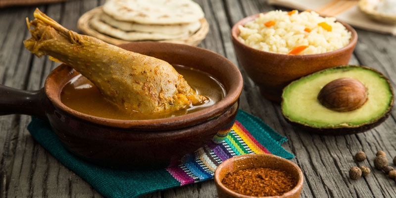

Kak'ik

Kak'ik is known as caldo colorado de pavo o chunto, traditional from
Cobán. The word Kak'ik is of Mayan origin and means red and chili, for
each respective syllable. This dish is always served with rice to add to
the broth and small tamales of corn dough seasoned with nothing but salt,
which are called blancos or pochitos.
Ingredients
- 2 pounds of turkey cut in large pieces
- Half pound of tomato
- 4 ounces of tomatillo
- 2 large Guajillo chili
- 1 large pasilla chile
- 1 large red Chili pepper
- 6 large garlic cloves
- 1 medium onion
- 4 sprigs of cilantro
- 10 sprigs of mint
- Half an ounce of sesame seeds
- 4 peppercorns of coarse pepper or chapa pepper
- 4 to 5 peppercorns
- 1 ounce of pumpkin seed
- Onion stalks
- Annatto
- Salt
- Cobanero chili powder
Steps
-
First, cook the turkey with a little salt and a bouquet made with onion
stalks, mint and cilantro in enough water.
-
Make sure the water covers the meat as it will boil and some of it will
be consumed.
-
To make the recado, first brown the pumpkin seed, sesame seeds and
peppercorns.
-
Roast the chili bell pepper, chili peppers, garlic, onion, tomato and
tomatillo.
- Then, dry blend the mixture and strain it.
-
Remove the bouquet garni with which the turkey was cooked and add the
recado.
-
Boil for 10 minutes and season with a little salt, achiote and cobanero
chile to taste.
- Take care that the turkey does not overcook.
-
Finally, serve in large pieces with a little rice, tortillas or tamales
to taste.